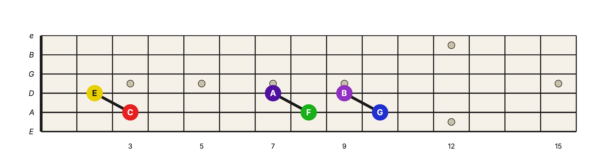
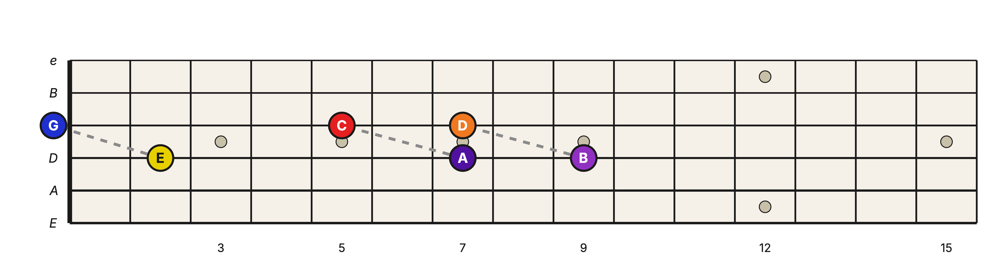
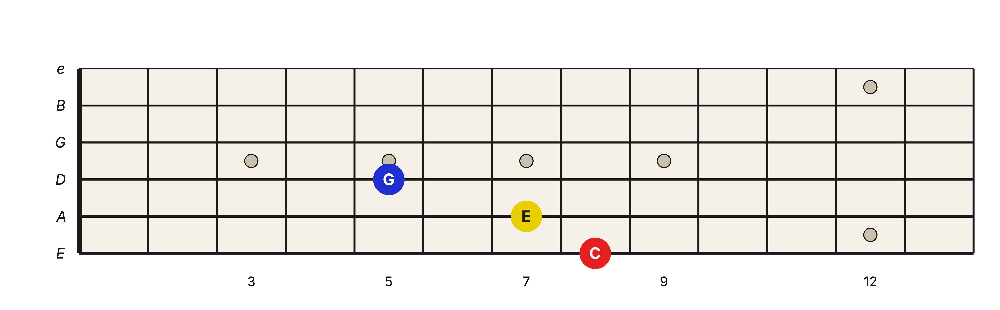

Level 2 · Chapter 7
The Fretboard: Major Triad Shapes on the E-A-D and A-D-G String Sets
In the last chapter, you built the Major triad from two stacked 3rds: a Major 3rd on the bottom and a minor 3rd on top. The result was the strict three-note chord 1–3–5.
Three notes are a perfect fit for three strings. On the neck, the whole chord becomes one compact shape, with one chord tone on each string.
From the pitch line to the fretboard
The previous chapter showed the C, F, and G chords on one horizontal note ruler. Now we will distribute each triad across the A, D, and G strings, one chord tone per string.
Start with the lower interval in each triad: the Major 3rd from the root to the 3rd. Put each root on the A string and its 3rd on the D string.

Because the D string is a Perfect 4th above the A string, the 3rd lands one fret behind the root. If the root is at fret R, the 3rd is at R−1 on the D string.
Next, put the upper minor 3rd on the D and G strings. Its lower note is the 3rd of the chord; its upper note is the 5th.

On the D and G strings, the 5th lands two frets behind the 3rd. Since the 3rd was already at R−1, the 5th is at R−3.
Put the two layers together and the three Major triads appear:
![The C, F, and G triads in root position on the A-D-G strings, each chord's two 3rds shown as connecting lines: a solid black line marks the Major 3rd from the root to the 3rd, and a dashed gray line marks the minor 3rd from the 3rd to the 5th. C: root C on the A string at the 3rd fret, the 3rd E on the D string at the 2nd fret, and the 5th G on the open G string. F: root F on the A string at the 8th fret, the 3rd A on the D string at the 7th fret, and the 5th C on the G string at the 5th fret. G: root G on the A string at the 10th fret, the 3rd B on the D string at the 9th fret, and the 5th D on the G string at the 7th fret](../assets/img/c-f-g-major-triads-a-d-g-lines.png)
Read each shape from the A string upward: root, 3rd, 5th. The C shape is C at fret 3, E at fret 2, and the open G string. F is 8–7–5, and G is 10–9–7.
If the root is at fret R, the shape is:
- Root: fret R on the lowest string
- 3rd: fret R−1 on the next string
- 5th: fret R−3 on the highest string
The same shape on the E-A-D strings
The E-A-D and A-D-G string sets have the same tuning relationship: each neighboring string is a Perfect 4th above the last. That means the R, R−1, R−3 arrangement transfers without changing.
Here is C on E-A-D. The root C sits on the low E string at the 8th fret, the 3rd E sits one fret behind it on the A string, and the 5th G sits three frets behind the root on the D string.

Read from the lowest string upward and it is the same interval stack: C, then a Major 3rd up to E, then a minor 3rd up to G.
Make the shape movable
Whenever all three notes are fretted, you can slide the shape anywhere along either string set. The note under the root finger names the chord.
- Put the root on the low E string at the 5th fret and the shape becomes A.
- Put the root on the A string at the 5th fret and the shape becomes D.
You are not memorizing a different grip for every Major chord. You are learning one interval structure and moving its root.
Hear it
First, play the three A-D-G triads from the combined figure, one at a time. Let all three strings ring together:
- C: C on the A string at fret 3, E on the D string at fret 2, and the open G string
- F: F on the A string at fret 8, A on the D string at fret 7, and C on the G string at fret 5
- G: G on the A string at fret 10, B on the D string at fret 9, and D on the G string at fret 7
Listen for the shared Major quality. Each chord has a different root, but each uses the same M3 + m3 interval stack and the same R, R−1, R−3 fret pattern.
Next, compare C on A-D-G at frets 3–2–0 with C on E-A-D at frets 8–7–5. The register and color change, but both grips contain the same three chord tones in the same order: 1–3–5.
Now slide the fully fretted E-A-D shape down so its root lands on the low E string at the 5th fret. Strum the three strings together. The shape has not changed, but the root has, so you are now hearing A.
Try it yourself
Play the Major-triad shape on E-A-D with its root on the low E string at the 5th fret. Name the root, 3rd, and 5th, then check yourself below.
Answer key
A: A, C♯, E. The root A is at the 5th fret, the 3rd C♯ is one fret back on the A string, and the 5th E is three frets back on the D string.
Now put the same shape on A-D-G with its root at the A string's 5th fret. Name all three notes.
Answer key
D: D, F♯, A. The root is at fret 5, the 3rd at fret 4 on the D string, and the 5th at fret 2 on the G string.
To sum up the chapter: on both low three-string sets, a root-position Major triad places the root at fret R, the 3rd at R−1, and the 5th at R−3.